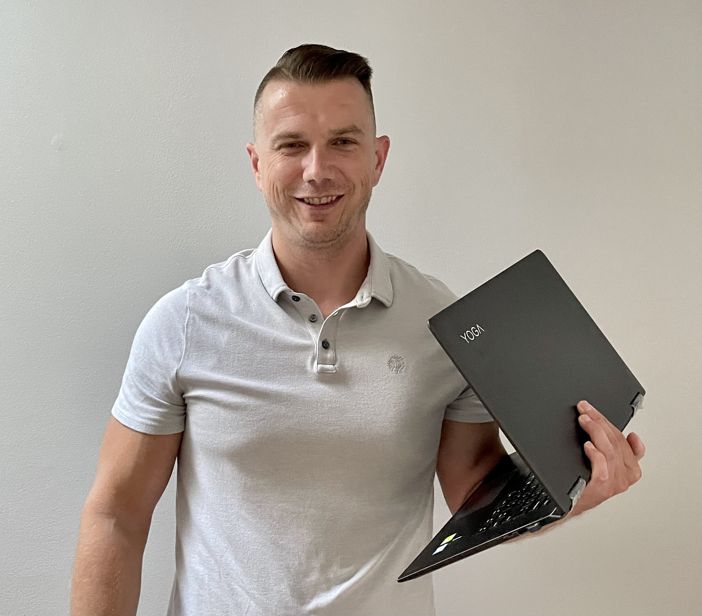

Rafal Brodowicz
LinkedIn Profile
rafbrodi@gmail.com | 6304008748 | Orland Park, Illinois
60462

Full Stack Software Developer/Engineer
Dedicated and innovative Full Stack Developer/Engineer with extensive experience in managing all phases of software development. Proven track record in enhancing productivity and efficiency through technology solutions. Adept in translating complex requirements into user-friendly solutions. Proficient in Java, Spring, JavaScript, React/Redux, Angular, and modern development methodologies.
Technical Proficiencies
-
Programming Languages
(Java, Spring, JavaScript, Typescript, HTML, CSS, Angular, React, SQL)
Testing Frameworks
(Junit, Cypress, Mocha, Jasmine, Selenium, Karma, Jest)Cloud & DevOps
(Cloud Foundry, AWS, GCP)Databases
(SQL, Oracle, MongoDB)Version Control
(Github, GitLab, BitBucket))Development Tools
(Gradle, Maven, Groovy, Terraform, Jenkins))IDE
(IntelliJ IDEA, Visual Studio Code)
Professional Experience
Brooksource Consulting, Aug 2022 – Present
Remote
Full Stack Software Engineer
Tech Stack leveraged: Angular, Typescript, HTML, CSS, Karma, CMS, Figma, FullStory, Java, Spring, Junit, Maven, GCP, Jira, Bitbucket, Confluence, Jenkins, Kubernetes
Work on a Contract at Papa Johns International, where I am able to use my experience to help improve existing processes, and functionality. Leverage prior skills, and knowledge, to develop new features, and participate in innovation, and modernization efforts my Team has been tasked with.
- Review existing applications, and infrastructure, with the goal of improving upon these existing systems.
- Take part in multiple innovation collaboration sessions, where ideas were exchanged on potential improvements, as well as development of new features.
- Work with Technology Teams on implementing Enterprise-wide application upgrades.
- Collaborate with Business Team, and Product Owner, on developing new features, and creating ways to improve our UI, for better Customer experience.
- Participate in Agile ceremonies, and used my experience to try to help, and improve Agile processes within the company.
- Partner with other Teams, that used our suite of Applications, to help resolve integration issues, and help answer questions related to the Applications we managed.
Tripoint Solutions, Oct 2021 – Aug 2022
Remote
Full Stack Software Developer
Tech Stack leveraged: Angular, Typescript, HTML, CSS, Karma, Cypress, Java, Spring, Junit, Gradle, SQL, AWS, Jira, Bitbucket, Jenkins, Docker
Offer expert advice and help on front-end testing to produce quality, bug-free code as well as raise code coverage. Plan, execute, and complete end-to-end code testing by implementing Cypress IO Test suite. Focus on enhancing end-user experience by offering expert suggestions for better UI functionality.
- Delivered expert services within scrum / full-stack development environment by applying key technical expertise and knowledge.
- Contributed to stand-up activities on a daily basis as well as determined and recommended improvement opportunities for unit and integration testing.
- Utilized different technologies for the applications development in full-stack environment.
- Designed and created an integration test framework for front-end testing (Cypress IO) for the team.
- Recommended Jira story clarity and made readable for developers that aided in eliminating defects and deviations from AC.
- Delivered active support in improving the overall development process within the department.
CVS Health (Technology and Innovation Labs), April 2019 – October 2021
Buffalo Grove Illinois, Remote
Full Stack Software Engineer
Tech Stack leveraged: Angular, Typescript, HTML, CSS, Karma, Protractor, Java, Spring, Junit, Gradle, Oracle, Pivotal Cloud Foundry, Pivotal Tracker, Git, Jenkins, Artifactory, Docker
Rendered expertise as a Full Stack Software Engineer working in XP / Full Stack Development Environment and in a Paired-Programming environment. Provided coaching and mentoring to other engineers on XP practices, processes, and technologies. Assisted in all functions related to planning, designing, and development of new software applications. Attended product inception and IPM meetings to understand work and set plans, goals, and responsibilities for the team. Applied extensive cloud foundry experience to build, deploy, run, and scale applications. Used various technologies for development of applications in full-stack environment.
- Introduced and implemented XP Software Development practices within the company by using prior XP Development experience.
- Leveraged key expertise and knowledge while recommending improvements in building out Services and APIs as well as in unit and integration testing.
- Played a key role in executing training and learning activities such as technology lunch and learn events.
- Supported in maintaining testing coverage more than 90% for front-end and back-end code.
Allstate Insurance Company (Compozed Labs – Claims Technology Services), Feb 2017 – Apr 2019
Northbrook, Illinois
Full Stack Software Engineer
Tech Stack leveraged: ReactJS, HTML, CSS, Jest, Protractor, Java, Spring, Junit, Oracle, Gradle, Pivotal Cloud Foundry, Pivotal Tracker, Git, Jenkins, Artifactory, Docker
Actively involved in product inception and IPM meetings as well as in daily lab stand-up activities. Contributed to all activities related to new software applications designing and development. Created new applications and added new features to existing applications in coordination with business partners.
- Improved applications functionality by refactoring and troubleshooting software code.
- Planned and managed training and learning activities, including technology lunch and learn events.
- Delivered exceptional performance and completed three months software development bootcamp.
- Shared innovative ideas for new applications development during project planning and designing.
Allstate Insurance Company (Claims Technology Services), May 2014 – Feb 2017
Northbrook, Illinois
Systems Analyst
Researched, determined, and suggested technical process improvements. Developed a better understanding related to the technical details, integration, and functionalities of applications, software, and hardware within the company. Identified impacts for moderate to high complexity projects and led difficult maintenance efforts to maintain efficiency. Gathered required information to produce detailed technical and topology documents.
- Coordinated changes across the systems in collaboration with various technical and business teams.
- Conducted in-depth analysis to evaluate and assess proposed software solutions.
- Oversaw all activities related to the planning and execution of application fail-over exercises.
Additional Experience
Systems Engineer
Allstate Insurance Company (ATO – Allstate Technology and Operations), Northbrook, Illinois, Feb 2013 – May 2014
Systems Administrator
Americaneagle.com, Park Ridge, Illinois, Oct 2007 – Feb 2013
Education
Master of Business Administration, Project Management 2008 - 2010
Keller Graduate School of Management, Schaumburg, Illinois
Bachelor of Science, Computer Information Systems 2005 - 2008
Devry University, Addison, Illinois
Certifications / Training
3 Month Accelerator Training in Full-Stack Development by Galvanize
Attended Technology Lunch & Learn Events Hosted by Pivotal, Allstate, CVS
ITIL Certificate in Service Management
Other
About Me
Contact Me